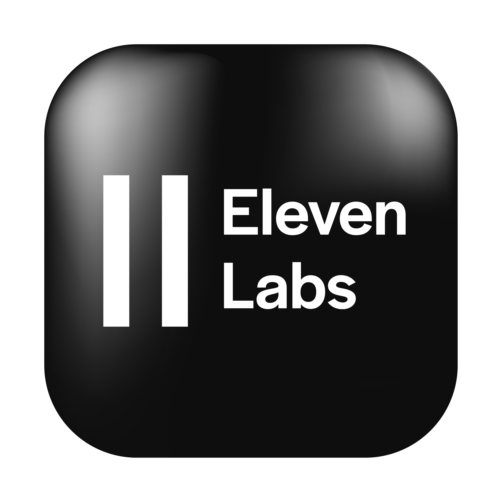

Sobre mí
Me llamo Juan Ezequiel Matus Moreno, soy estudiante de ingeniería en diseño multimedia con grandes habilidades en programación gráfica, diseño y marketing digital, modelado 3D e inteligencia artificial.
Mis proyectos destacan por su formalidad, profesionalismo y enfoque minimalista, optimizando recursos sin sacrificar calidad.
Conocimientos
Tengo habilidades en herramientas clave del ámbito multimedia:
- Blender

- Canva

- Adobe Photoshop

- Adobe Illustrator

- MATLAB

- Embarcadero C++ Builder

- Ibis Paint X

- Microsoft Office

- OBS Studio

- ElevenLabs

- Olive Video Editor

- Hugging Face Spaces AI

Contacto
Email: JuanMmultimedia@outlook.com
Ubicación: Ciudad del Carmen, Campeche, México
Portafolio
Educación
Estudiante de Ingeniería en Diseño Multimedia en la Universidad Autónoma del Carmen.